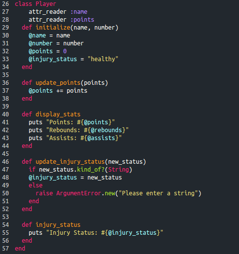
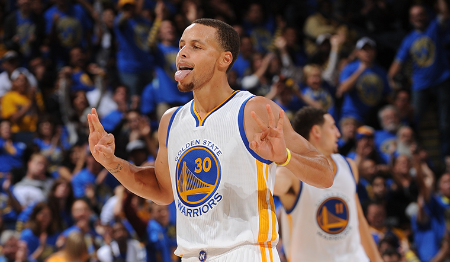
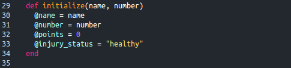
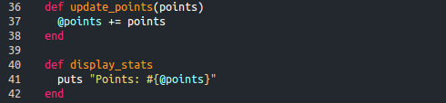
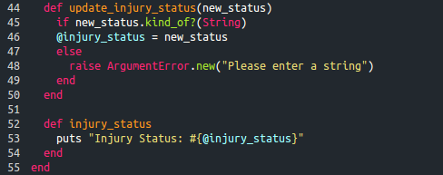
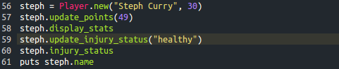
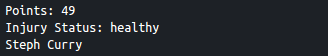
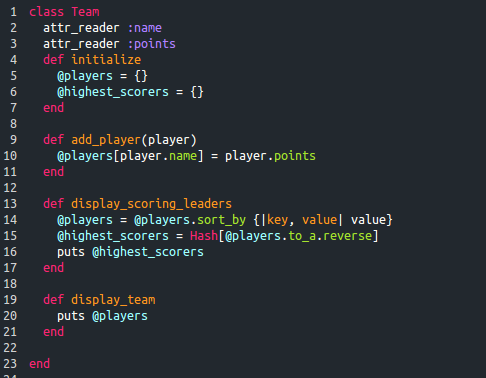
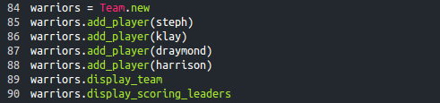
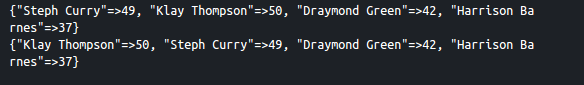

In order to pracitce working with classes, lets create a class that will allow us to sort data for basketball players and teams. The first class we will look at is the player class, which you can see below.


It looks pretty long so let's break it down. The initialize function at the top allows the user to enter a player's name and number when a new player joins the league. Their points are initialized to zero and their injury status is assumed to be healthy.

Next, the update points function allows you to update the player's total points by adding the amount they scored that night to their total while the display_stats function displays them.

update_injury_status lets you change the injury status of a player when they are injured and raises an argument error when you fail to enter a string. Finally, injury_status will display their injury status.

Here is an example of how you could use this class to create a player. The output from the the code on the left can be seen in the picture to the right:


The Team class allows you to add existing players to a team, display a list of the players on the team, and display a ranking of the highest scorers on the team.


As you can see above, the Team class stores players and their total points in a hash. It then sorts them by their points in the display_scoring_leaders function. The attr_reader declarations at the top of each class allows the team class to access the names and points for each player.
Here is how you would make a warriors team, assuming that you had already created the harrison, klay, and draymond players via the player class. The output of the code can be seen on the right:


Try playing with the classes so that you get a better feel for what each function does. If you wanted to expand on these classes, you could add additional statistics that you can track such as assists and rebounds which would be very similar to how points are tracked. Try it out on your own!